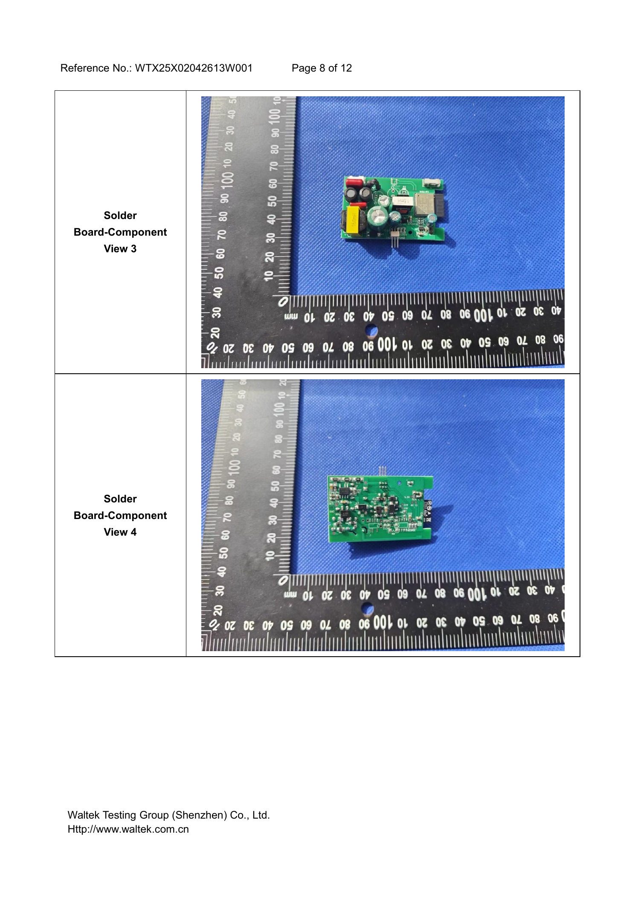
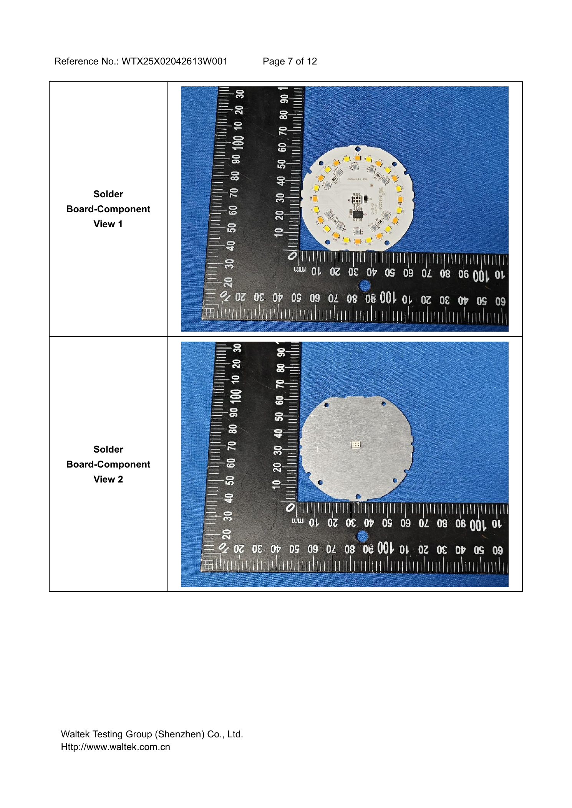

Reported by a production-unit UART boot log.
00 · Hardware
Inside the
sphere.
FCC photographs and an independent UART boot log expose a capable Espressif platform, a purpose-built five-channel light engine, and device-resident automation storage.
Board-level evidence
Three assemblies do three different jobs.
The Ambient is not a sealed commodity bulb module. Public certification photographs show a radio/control section, a mains power board, and a circular metal-backed LED board.



Images reproduced from the public FCC certification exhibits for 2BNDN-OAAMBUS. The photographs document the tested hardware; they are not Oasis marketing images.
Silicon and firmware
A platform capable of Matter is not a Matter product.
The clearly visible controller is an Espressif ESP32-C6. The chip supports Wi-Fi 6, Bluetooth LE, and 802.15.4. That last radio makes Thread and Matter technically possible, but it does not establish that Oasis enabled either stack.
Evidence boundary
The validated lights identify as ambient2, use Bluetooth Mesh, and report is_matter=false. Silicon capability must not be mistaken for commissioned-product behavior.
Dual OTA slots, NVS, LittleFS storage, and a core-dump partition.
Unsigned replacement firmware is blocked; the public eFuse report says flash encryption is off.
The public sample booted application version 2.21.12; the validated installed pair reports 2.22.26.
The independent teardown exposes TX, RX, power, ground, and boot-related test pads. That makes read-only firmware analysis plausible while leaving signed firmware replacement intentionally difficult. See the community teardown and UART transcript.
Light engine
Five channels produce both color and calibrated white.
The boot log names an SM5235E driver, five control lines, white and color modes, nine configured LED beads, and a 200 ms fade. It also prints the exact warm/cool mixing curve used for precise white control.
2000 KWarm 100 · Cool 0
2400 KWarm 75 · Cool 25
3000 KWarm 45 · Cool 55
3500 KWarm 22 · Cool 78
4000 KWarm 0 · Cool 100
This curve is more valuable than a generic linear color-temperature conversion: it gives an interoperable controller the device's own calibrated relationship between requested Kelvin and the two white channels.
Local intelligence
The circadian schedule lives close to the LEDs.
Firmware startup logs initialize AutomationManager, check AutomationStorage, migrate a legacy solar cycle, and load SolarCycleStorage from NVS. That aligns with the official app's complete-room automation command and missing-data bits for timezone, location, and solar cycle.
Why this matters
The “natural day” is not merely the phone changing color on a timer. Oasis is designed to store and execute the program on the device after the app supplies the schedule, timezone, and location.
Product family and manufacturing
The radio architecture extends beyond the Ambient.
| Filed product | Public evidence | Confidence |
|---|---|---|
| Ambient / Throw Light | ESP32-C6 visibly marked; Wi-Fi 6; separate radio/power/LED assemblies. | Confirmed |
| A19 E26 | ESP32-C6 visibly marked; comparable separated board architecture. | Confirmed |
| Candle E12 | Smaller radio board and 802.11ax filing; exact chip marking is less legible. | Family inference |
| MR16 GU10 | Smaller radio board and 802.11ax filing; exact chip marking is less legible. | Family inference |
The original Ambient filing names Hangzhou Sky-Lighting as manufacturer. A later T variant names Balder Technology in Thailand while retaining a very similar board layout and ESP32-C6 platform. This suggests a manufacturing transition, not a newly proven protocol generation.